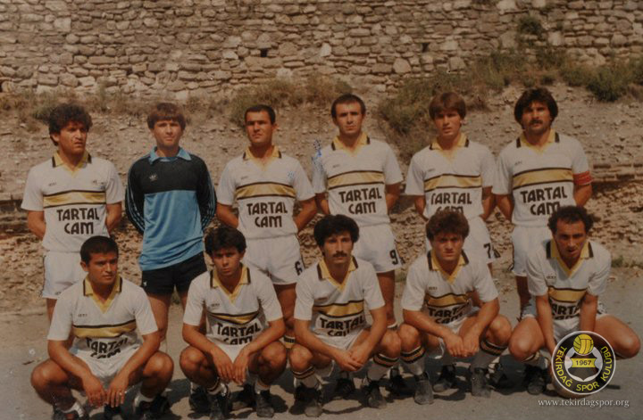

KURUCULAR:
Profesyonel ligin ülke genelinde kurulduğu yıllarda şehrimizde faaliyet gösteren YILMAZSPOR,HALKSPOR,TEKİRDAĞ GENÇLİKSPOR ve ÇİFTLİKÖNÜSPOR un katılımlarıyla yapılan toplantılarda şehrin ileri gelenlerinin çabaları sayesinde TEKİRDAĞSPOR un temelleri 1967 yılında atılmıştır.Bu toplantılar sonucunda HALKSPOR ve TEKİRDAĞ GENÇLİKSPOR külüpleri birleşerek HALKSPOR un KIRMIZI-SİYAH renklerinden SİYAH;TEKİRDAĞ GENÇLİKSPOR un SARI-LACİVERT renklerinden SARI renkleri birleştirerek takımımızın simgesi olan SARI SİYAH renklerimiz ortaya çıkmıştır.
KURUCU başkanlığını eski milletveki FETHİ MAHRAMLI nın yaptığı TEKİRDAĞSPOR u kuruluş yıllarında KEMAL TÜTEN,HÜSEYİN ARITEPE,MEHMET SEREZ,ADNAN SOYUER,ŞEFİK GÜRSOY,YILMAZ CİCİOĞLU,MESTAN MENEKŞE,CEMAL ÜNLÜSARAÇ,OSMAN ALYANAK,AVNİ MUTLU,GÖKŞEN SEREZ,HÜSEYİN TETİK,BASRİ KALYONCU, HÜSEYİN KARAEVLİ,AHMET KARAEVLİ,FAHRİ TANRIÖVER,ŞEVKET TOLUNAY, İSMET AKÇAKAYA,EMİN ESKİN,NAMIK UYSAL yöneticilik görevlerini üstlenmiştir.
Sonraki yıllarda YILMAZ CİCİOĞLU,NECDET IŞIN,SEBAHATTİN SİDAŞ,AHMET HAMOĞLU,ENGİN BİLGE,ÇETİN GÜVEL,MUHTAR MAHRAMLI,SABRİ SON,NİHAT EFE,MUSTAFA AYDOĞDU,FİKRET YILMAZ,ÖNER ÖZEN,MEHMET YURDANUR,İMDAT YILDIRIM,MESUT DEMİR,ALİ SAMUR,AYTAÇ ERİZ,LÜTFÜ DÖKMEN ve ERCAN KISA başkanlıklarında yönetilen TEKİRDAĞSPOR a emeği geçen tüm yöneticilerimizle birlikte şükranlarımızı ve teşekkürlerimizi sunarız.
1967-1968 sezonunda yeni kurulan 17 takımlı 3. ligde antrönör İLHAN URALGİL in çalıştırdığı takımımız,ligi 6. olarak tamamlamıştır.1976-1977 sezonunda 3.ligde şampiyon olan TEKİRDAĞSPOR,1984-1985 SEZONUNA kadar 2.ligde mücadele etmiş güçlü istanbul takımlarıyla 1.lig için çekişmiştir.1985 senesinde 3.lige düşen takımımız 1991-1992 senesinde istanbulspor ile girdiği şampiyonluk yarışında rakibini 2 maçtada yenmesine rağmen sezonu 1 puan farkla 2. olarak kapamıştır.2010-2011 sezonunda son 2 takım arasında olmamasına rağmen statü gereği play-out maçı sonucu BAL ligine veda eden takımımız; 2012-2013 sezonunda tekrardan Bölgesel Amatör Lig'e yükselmiştir.
2014-2015 sezonunda BAL liginde mücadeleye devam eden Tekirdağsporumuz sezonu 1. tamamlayarak 3. Lige yükselmiştir.